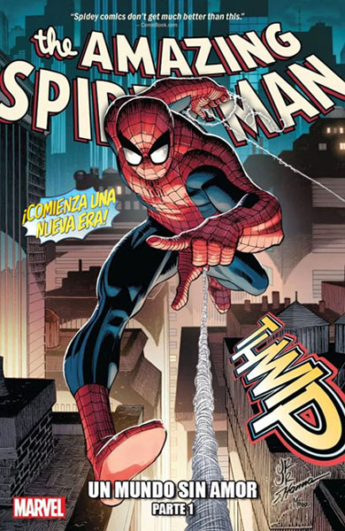
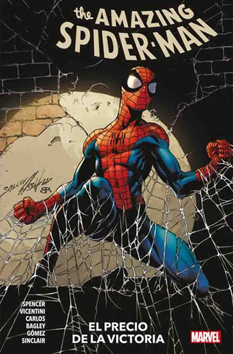
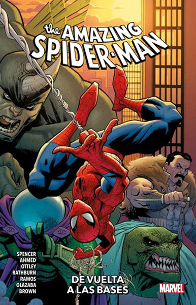
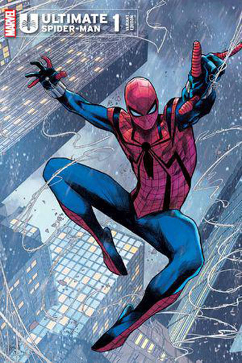
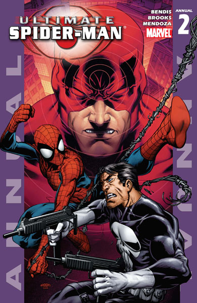
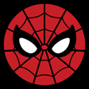

Cómics Principales del Amigable Vecino
The Amazing Spider-Man
The Amazing Spider-Man es una serie de cómics estadounidenses publicada por Marvel Comics, con el superhéroe real Spider-Man
como su principal protagonista.
The Amazing Spider-Man es el cómic mensual más importante y representativo de la saga, y es el único que tenía al personaje de Spider-Man
hasta Peter Parker, The Spectacular Spider-Man en 1976. La mayor parte de los personajes y villanos de la saga de Spider-Man se presentan aquí,
y es donde ocurren los sucesos clave de la historia. La publicación continúa emitiéndose sin interrupciones hasta el nº441 (noviembre de 1998)
cuando Marvel Comics lo relanza bajo el Nº 1 del volumen 2 (enero de 1999), pero en el 40º aniversario de Spider-Man, esta nueva entrega, volvió
a la antigua numeración, continuando bajo el número de publicación nº 500 en el número diciembre de 2003.



The Ultimate Spider-Man
Ultimate Spider-Man es un cómic de superhéroes publicado por Marvel Comics desde 2000 hasta 2011 como una reimaginación moderna de
la franquicia de cómics de Spider-Man como parte del sello Ultimate Marvel.
- Poder y Responsabilidad (#1-7): Cuenta el origen de Spider-Man, entrando en detalle en la relación de Petey y el tío Ben
a la par de que se introducen los primeros elementos distintivos del cómic como la relación de Peter y Norman Osborn con la sustancia OZ.
- Curva de Aprendizaje (#8-13): Peter conoce a J.J Jameson y gana su empleo como diseñador Web y fotógrafo para
el Daily Bugle y como Spider-Man combate al Kingpin y a sus asesinos, Los Enforcers, y Electro. Además empieza una relación amorosa
con Mary Jane Watson después de revelarle su identidad secreta.
- Problema por Duplicado (#14-21): Spider-Man combate al Dr. Octopus, Justin Hammer, Kraven el cazador y conoce a una difícil
chica llamada Gwen Stacy.
- Legado (#22-27): Peter, con la ayuda de Nick Fury se enfrenta al horriblemente transformado Norman Osborn.
- Escrutonio Publico (#28-32): Un imitador de Spider-Man aterroriza a la gente de NY y asesina a George Stacy el padre de Gwen Stacy lo que provoca
que la gente este en contra de Spider-Man. La oficial Jeanne De Wolffe es presentada como el reemplazo del oficial Stacy. Además Mary Jane rompe
su relación con Peter.
- Venom (#33-39): Peter se reúne con su amigo de la infancia Eddie Brock Jr; un joven brillante pero irresponsable que posee un traje experimental
heredado de los padres de ambos, el cual tiene el potencial de curar enfermedades como el cáncer. Peter se atreve a utilizar el traje pero pronto
se da cuenta de que el traje solo potencia su ansia de venganza y a su vez se alimenta de su anfitrión. Horrorizado Peter destruye el traje. Pero
Brock utiliza una muestra oculta del traje y la prueba en sí mismo, convirtiéndose en Ultimate Venom.
- Irresponsable (#40-45): Peter conoce a Marvel Girl, Storm y Kitty Pride de los X-Men y junto a ellas enfrentan al adolescente Geldoff quien
apenas acaba de descubrir sus habilidades mutantes. Poco antes de esto Peter y Mary Jane descubren que realmente están enamorados y vuelven a estar
juntos.
- Gatas y Reyes (#47-53): Este arco argumental presenta dos historias; la primera es una reimaginación del Amazing Spider-Man #91 acerca
de un político corrupto llamado Sam Built, mientras que la segunda es la presentación de las versiones "Ultimate" de Black Cat y Elektra.
- Hollywood (#54-59):Es una parodia de la película Spider-Man 2. Se está produciendo un filme no autorizado acerca de Spider-Man con Dr. Octopus
como el villano principal siendo el protagonista del filme Tobey Maguire; mientras que Sam Raimi, Bruce Campbell y Avi Arad aparecen como aparaciones.
Gwen también descubre que Peter es Spider-Man y atenta contra el apuntándole con un arma, no es hasta que Peter le explica que el que no lo asesinó,
y ella misma lo perdona.
- Matanza (#60-65): Bendis reinventa el personaje de Carnage como un monstruo vampiresco derivado de muestras de la sangre de Peter
y del traje simbiótico que dio origen a Venom. Carnage asesina a Gwen Stacy y Peter se culpa a sí mismo por su muerte.
- Superestrellas (#66-71): Peter conoce al Dr. Extraño, Johnny Storm y Wolverine. Cuando se encuentra con este se da cuenta de que sus mentes
han sido intercambiadas de cuerpos lo que hace que ambos sean forzados a vivir un día en el cuerpo del otro. Al final de esta parte nos enteraremos
de que ha sido obra de Jean Grey. Peter posteriormente se encuentra con Johnny Storm, quien estudia en la Midtown High debido a que nunca acabó el
instituto y le falta sólo medio semestre, en la escuela se hace novio de Liz Allen, estando en la playa, Johnny accidentalmente se enciende, y Liz
lo abandona asumiendo que es un mutante.
- El Duende (#72-78): Peter pelea contra Harry Osborn quien se convierte en el Hobgoblin. La vida de Mary Jane es puesta en peligro en la
batalla. Peter se da cuenta del riesgo que ser Spider-Man pone en peligro la vida de Mary Jane por lo que termina su noviazgo con ella.
- Guerreros (#79-85): Se suscita una guerra de pandillas en la cual Shang Chi, Moon Knight, y Iron Fist se encuentran involucrados.
- Silver Sable (#86-90): Presenta a la mercenaria femenina del mismo nombre. Este arco es una secuela directa del videojuego Ultimate Spider-Man.
- Deadpool (#91-94): Presenta a Deadpool y su grupo llamado The Reavers, quienes capturan a Spider-Man y a los X-Men y los llevan a Krakoa
a presenciar una ejecución en vivo. Miles Warren aparece como el interés amoroso de la Tía May.
- Morbius (#95-96): Es una historia especial en la que se presenta a Morbius y Blade. En la historia, Ben Urich es mordido por un vampiro
pero Morbius salva al reportero mientras que Spider-Man los defiende de un ataque de vampiros. Peter y Mary Jane empiezan a ser amigos de nuevo.
- Saga del Clon (#97-105): El Doctor Octopus con la ayuda de Ben Reilly, crea clones de Peter Parker. El único completamente normal y sano, es una
versión femenina de Peter, llamada Jessica Drew, alias Spider-Woman. Otro de los clones de Peter, llamado Kain, convierte a Mary Jane un duende peludo
y rojo (Ultimate Demogoblin), pero el auténtico Peter, con la ayuda de Los 4 Fantásticos, consigue curarla. A raíz de este suceso Peter se da cuenta
de que sigue enamorado de Mary Jane, por lo que reanudan su relación al ver que aunque no estén juntos ella siempre está en peligro. Tía May se
entera de la identidad de su sobrino. El Doctor Octopus es detenido y todos los clones destruidos, salvo Jessica y otro clon con cola robótica
(Ultimate Escorpión). También se descubre que Gwen ha sido clonada y convertida en la criatura que la mató.
- Caballeros (#106-110): Daredevil recluta a varios héroes para matar a Kingpin, entre ellos, Spider-Man. Al mismo tiempo, Peter tiene que
pasar el mal trago de romper con Kitty.
- La Conversación (#111): Peter y tía May hablan sobre lo que hace Spider-Man.
- La Muerte de un Duende (#112-117): El Duende Verde escapa de prisión y trama un plan para acabar con Nick Fury, y Spider-Man, con la ayuda
de Kitty Pride y los agentes de S.H.I.E.L.D. deberá detenerle. Finalmente hay un enfrentamiento entre El Duende Verde y su hijo Harry en su forma
de Duende. El Duende Verde mata a su propio hijo y tras esto pide a los agentes que le quiten la vida a lo que estos acceden.
- Spider-Man y Asombrosos Amigos (#118-121): Liz Allen, la compañera de clase de Peter, descubre que es mutante, y Spider-Man con la ayuda de
El Hombre de Hielo, deberá impedir que Magneto la engañe para tenerla en su equipo. Después de esto Peter tendrá que enfrentarse a Omega Rojo, e
impedir que haga daño a J.J. Jameson.
- El peor día en la vida de Peter Parker (#122): Shocker secuestra a Spider-Man para vengarse por tantas derrotas humillantes, y solo
Mary Jane y Kitty pueden ayudar a Peter.
- Guerra de Symbiontes (#123-128): Se intercambian pasado y presente para narrar lo ocurrido con Eddie Brock, el traje negro y la nueva
Gwen Stacy, quien definitivamente vuelve a la vida de Peter tras ser librada de su alter ego maligno (Carnage).
- Ultimatum (#129-133): La Ola Ultimátum ha destruido a Nueva York. Sin advertencia, una enorme ola gigantesca destruye la mayor parte
de Manhattan, matando a millones de personas en un pestañeo. Spidey, desesperadamente se sumergió en la locura para hacer lo que pueda. Mientras
lo hacía, fue contactado telepáticamente por Charles Xavier, el mutante psíquico de los X-Men. Xavier le cuenta a Spidey que Magneto había lanzado
esta perversa destrucción sobre la humanidad, pero Spiderman no había oído de él desde entonces, dejándolo preguntándose que
está pasando exactamente. Cuando la ola se retiró, Spidey ayudó a buscar sobrevivientes en el aguado infierno que era Midtown... y se encontró cara
a cara con el Increíble Hulk.El gigante verde persiguió a Spiderman a través del horror de Manhattan a la deshecha casa del maestro de las artes
místicas... el Doctor Strange. Al tomar tanto daño por la ola, la casa de Strange hizo erupción liberando energías mágicas. Spiderwoman y Kitty Pride
se dirigieron a Manhattan para encontrar a Spidey; Spiderwoman lo encuentra y a Hulk , quien en una ira ciega destruye lo que queda de la magia
del Dr. Strange , haciéndola explotar y perdiendo a Peter en el proceso. Cabe destacar que se deja en misterio si Spidey es una baja más en este arco.
- La Muerte de Spider-man (#156-160): El duende Verde libera a los villanos más fuertes de Spider-Man de la prisión del Triskelion, con el plan
de asesinar a Peter Parker. Mientras tanto, Spidey sale herido durante la guerra entre Ultimates y Nick Furia, para luego ser informado por
Mary Jane de que el duende y los villanos se dirigen a su casa. En otro lugar, la Antorcha Humana y Ice Man (quienes vivían como parientes de Peter),
son vencidos por el grupo del duende, quien mató al doctor Octopus en una discusión, pero Peter llega y vence a los villanos, cuando MJ llega y
atropella al duende. Entonces Peter, en un valiente acto, hace explotar el camión en el duende Verde y ambos mueren. En sus últimas palabras, Peter
le dice a su Tía May que no pudo salvar al Tío Ben, pero a ella si. Luego de decir esto, muere en los brazos de Mary Jane.
Especiales de The Ultimate Spider-Man
- Ultimate Sinister Six (#46 y Ultimate Six#1-7): Esta es una serie limitada en donde se presenta la versión "Ultimate" de los "Sinister Six", siendo Spider-Man y los
Ultimates los encargados de enfrentarse a este peligroso grupo de supervillanos que atentan contra la seguridad de S.H.I.E.L.D. y Nick Fury.
- Ultimate Spider-Man Annual #1: Este número especial presenta un romance entre Peter y Kitty Pryde de los X-Men.
- Ultimate Spider-Man Annual #2: Aparecen como invitados Daredevil y the Punisher.
- Ultimate Spider-Man Annual #3: Peter y Mary Jane hablan sobre si deberían tener o no relaciones sexuales, al final deciden dar
el siguiente paso en su relación. También hace aparición un nuevo villano conocido como Mysterio.


 Tienda de Cómics
Tienda de Cómics
Fuente:
Marvel Comics
Contacto:
Muruaga
Otras Páginas de Spider-Man:
